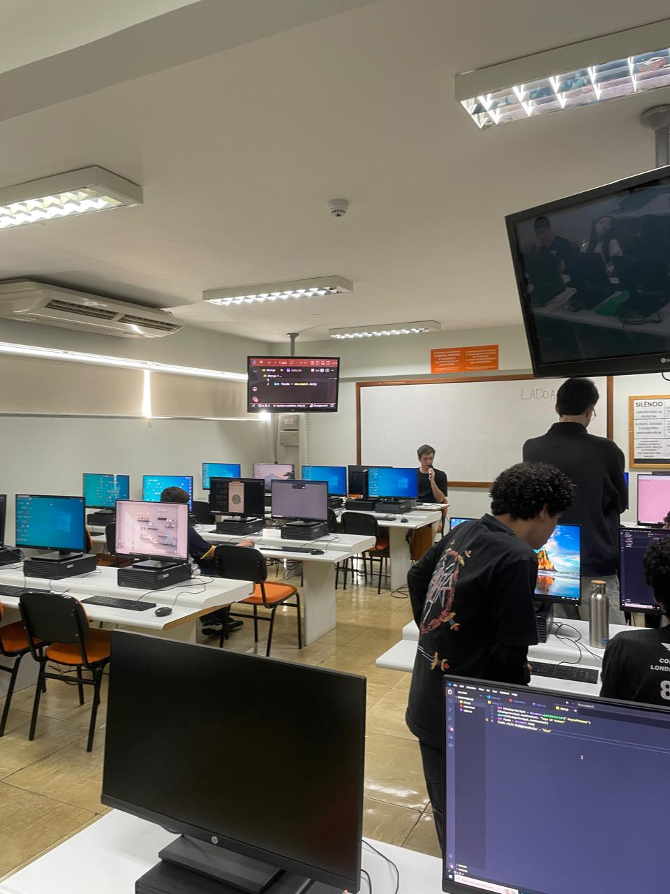

Relatório – 21ª Aula
Data: 24/08/2026
Turma: 8º e 9º ano
Instrutor:Fatobene
Relatório – JavaScript
A aula de hoje começou com o Instrutor Fatobene explicando os conceitos e os tipos de variáveis no JavaScript. Como a turma já tem a base de HTML e CSS, fomos direto para a parte prática: linkamos os arquivos e criamos variáveis para selecionar elementos por ID e classe, disparando um alert com o texto do h1. Deixamos um tempo para os alunos tentarem sozinhos e fiquei circulando para ajudar quem se enrolou na sintaxe ou na digitação, garantindo que todos conseguissem ver o alerta funcionando.
Na segunda parte, o Fatobene mostrou como usar uma variável para selecionar a tag body do HTML e mudar a cor de fundo da página direto pelo JS. Os alunos tiveram mais um momento prático para testar as mudanças de cores e, nessa etapa, auxiliei a criançada a aplicar a propriedade de estilo correta e entender como o código alterava o visual da tela. Foi uma aula bem dinâmica, o pessoal se empolgou ao ver a página mudando de cor e fechamos o dia com todas as atividades concluídas.
